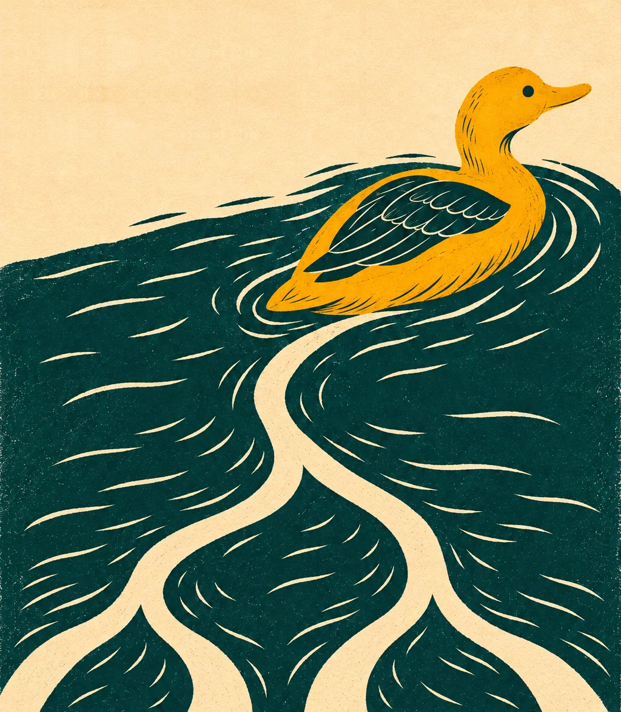

Train trees. Ship SQL.
Fit gradient-boosted trees in DuckDB. Export a scoring query you can run in a fresh DuckDB session.

Contents
- Fit your first modelPredict penguin body mass from bill and flipper measurements.
- Inside the native trainerExplore how histograms and split rules shape a tree.
- From trees to SQLScore a holdout, measure error and export a scoring query.
- Bring a trained modelImport trees from XGBoost, LightGBM or CatBoost.
Install in DuckDB
DuckDB 2.0.1 LTSLoad the extension
Install duckboost from the community repository. Load it each time you open a new DuckDB session.
-- From the DuckDB shell
INSTALL duckboost FROM community;
LOAD duckboost;Fit a curve
Generate 100 points on a parabola, train a regression model and save it in a table called fit.
CREATE TABLE fit AS
SELECT duckboost_train(y, [x]) AS model
FROM (SELECT i::DOUBLE AS x,
(i * i)::DOUBLE AS y
FROM range(100) t(i)) data;Get a scoring query
Use the model from the Train step to generate a SQL query. Run the returned query to predict a value for x = 4.
CREATE TABLE scoring_rows AS
SELECT 4.0::DOUBLE AS x;
SELECT duckboost_to_sql(
model, 'scoring_rows', ['x'])
FROM fit;